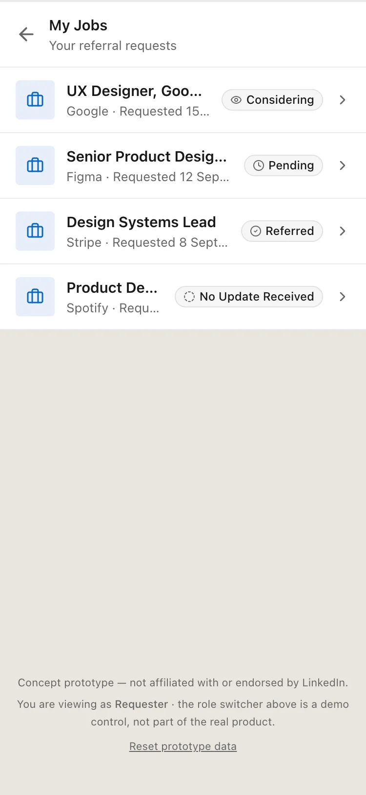
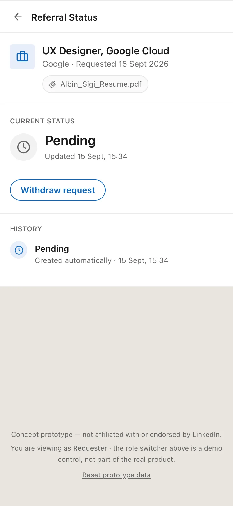
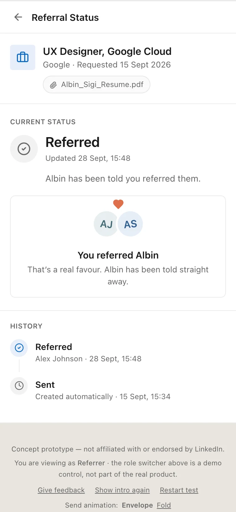
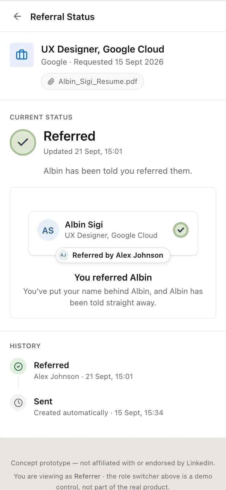
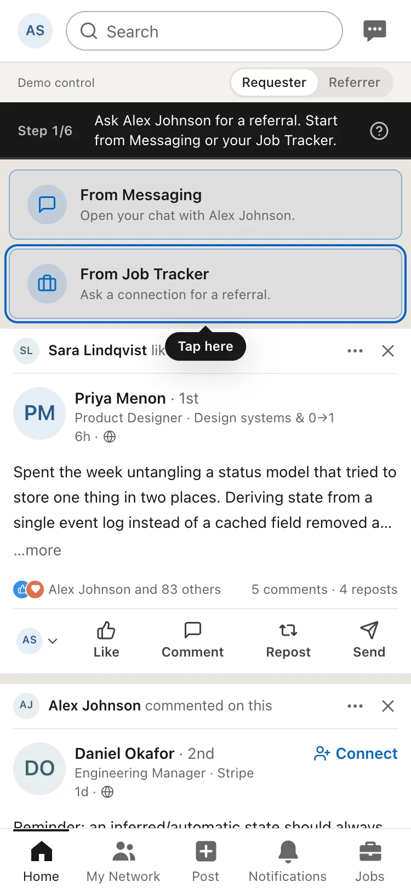
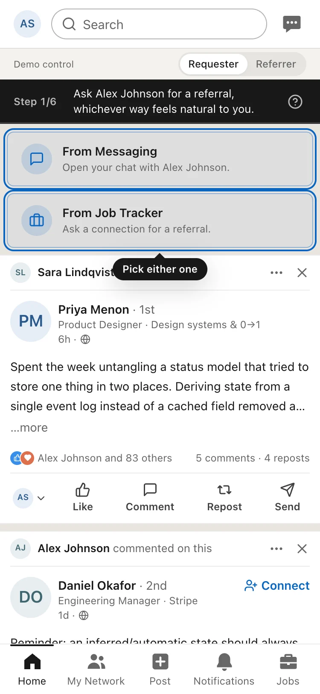
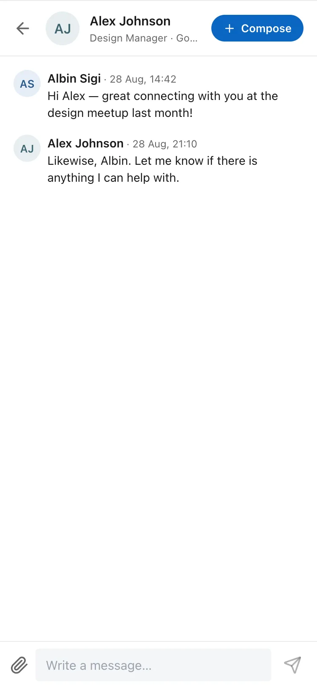
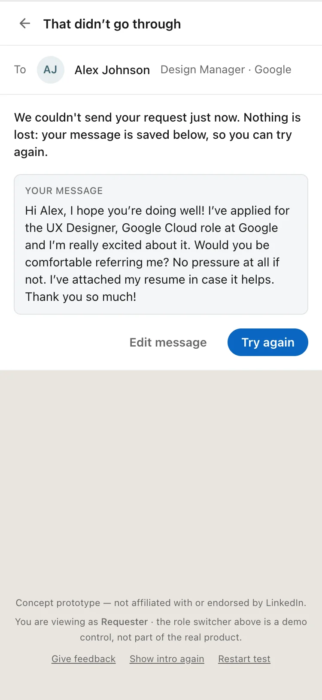
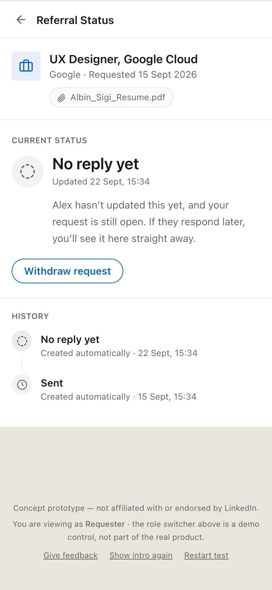
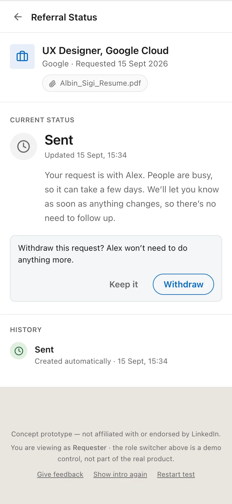

Case study 03 · Concept feature · Built and tested
You asked for a referral. Now you can see where it stands.
Role
Product designer, research to working prototype
Product
LinkedIn, iOS and web
Context
Self-directed concept, 2026
Tools
Claude Code, React, Tailwind, Mobbin
Research
6 interviews: 3 referrers, 3 job seekers
Testing
4 unmoderated sessions
Framework
Jobs to be done, then AARRR for impact
A concept project, not made or approved by LinkedIn. I copied its look so the idea
can be judged inside the product.
Why I Chose This Product
Referrals already happen inside LinkedIn, as plain messages. But there is no way to see where a referral stands. A request can sit for weeks and both people are left guessing. That gap lives inside a product job seekers already use.
Problem Identification (what's broken and why)
A message is either answered or not. A referrer who is checking with the hiring team looks the same as one who never opened it. So the requester fills the silence, waits, and sends "just following up". Saying no is hard too, because there is no small way to say "not this time". The requester needs an answer. The referrer wants to help but is busy.
Research & Competitive Benchmarking
I interviewed six people: three who asked for referrals and three who were asked. My first guess was half wrong. Referrers don't mind being asked or reminded. The awkward feeling is the requester's, mostly with strangers. The real gap is that the referrer can see the status and the requester can't. I also studied LinkedIn's own Job tracker on Mobbin.
Design Goals & Constraints
Every ask ends in a clear answer, and nobody has to chase.
The status does the reminding, not a button.
It lives where the ask already happens.
Saying no takes one tap.
Limit: LinkedIn can't see inside a company's hiring, so the referrer sets the status.
Key Design Changes & Rationale
The ask is written for you. Strangers get checked on their resume.
No nudge button. A visible status removes the need to ask.
Sent means sent. Nothing says Sent until it is really saved.
No red for a no. LinkedIn never uses it, so grey means closed.
Only real news moves. Just Referred gets its own moment.
Before vs. After
Three things changed after I built it and looked at it.

Before. The model's words.

Before. Pending, nothing else.

Before. A hug and a heart.
After. Plain words.
After. Says what it means.

After. A vouch.
What I'd Validate If This Were Real
The one number: resolution rate, the share of requests that reach Referred, Can't refer or Withdrawn within 14 days. The guardrail is how often referrers mute or block.
How long a request should be quiet before the system says so.
Whether one light reminder helps forgetful referrers.
How real referrers answer asks from real strangers.
Limitations & Honest Caveats
Six interviews show patterns, not proof.
In testing, one person played both sides.
No reply yet is designed but not built. I staged those screens.
Most people I spoke to were early-career, in India, in design or tech.
The referrer reports the status. It is not pulled from company systems.
Reflections
Most of the work was deciding who is allowed to say what, and what the product may assume when nobody says anything. My first guess was half wrong, and the interviews fixed it. A working prototype caught things a mockup would not, like a hug animation that read as romantic. AI helped with background research and with building from my spec. The decisions were mine.
Usability Testing (Iteration)
Four people ran it start to finish on their own phones. All four finished without help and said they would use it. The test had a flaw: the guide lit up only one way to ask, so early testers all went the same way. Halfway through I lit up both ways and recorded each choice.
The guide bar.

Before. One way lit.

After. Both lit.
Final Prototype & Key Screens
A working prototype with two roles: Albin asks and follows, Alex answers.
SentLooking into itNo reply yetReferredCan't referWithdrawn
Sent becomes Referred.

Ask from a chat.
Ask from a job.
The ask, drafted.
Sending.
A card in the chat.
Sent.
Alex's side.
Referred.
The update arrives.
The full history.
Every ask, one list.

If saving fails.

No reply yet.

Withdraw, asked once.
Outcomes & Reflection
6plain statuses
2ways to ask
0new tabs
4/4testers finished
Four of four testers finished alone and said they would use it. I checked all five AARRR stages. Only activation holds: the first ask that comes back with a real answer from a person, not silence. Acquisition, retention, referral and revenue don't, so I won't claim them.